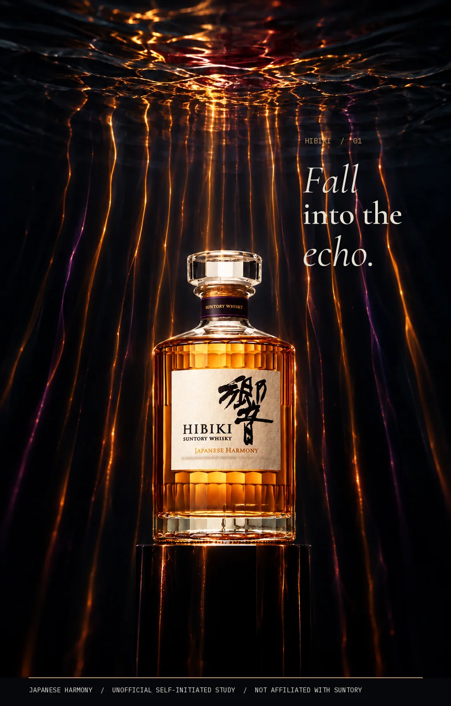
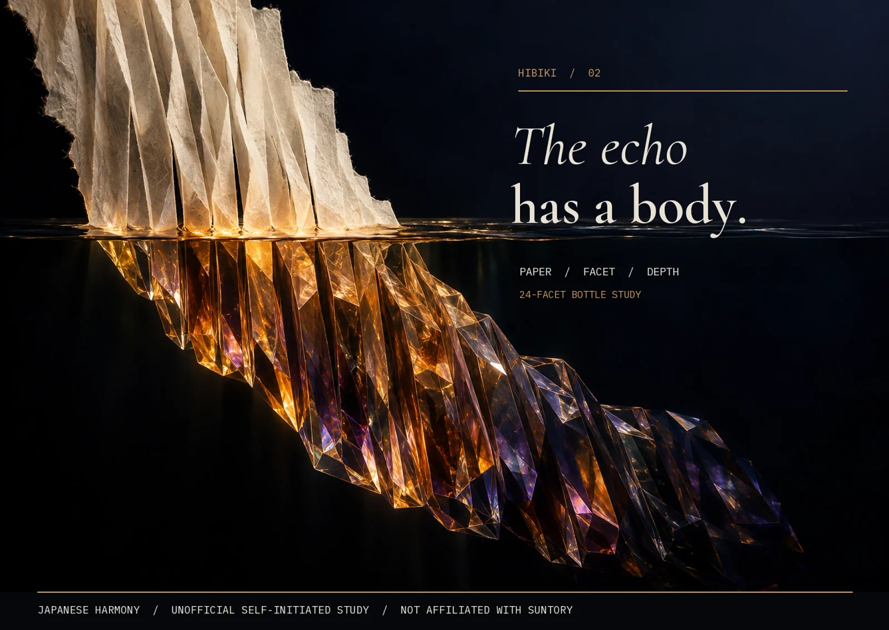

← All work
Drinks · Unofficial brand study
FALL INTO THE ECHO
Resonance made visible through water, glass and paper.

The idea
The bottle’s facets turn a surface disturbance into falling amber light. In the second frame, folded paper crosses the waterline and becomes faceted glass.
Making the world
The study uses the bottle’s faceted form and washi-label idea as its material vocabulary, without borrowing Japanese motifs as decoration. Product calligraphy and label details need packshot verification.
The series
